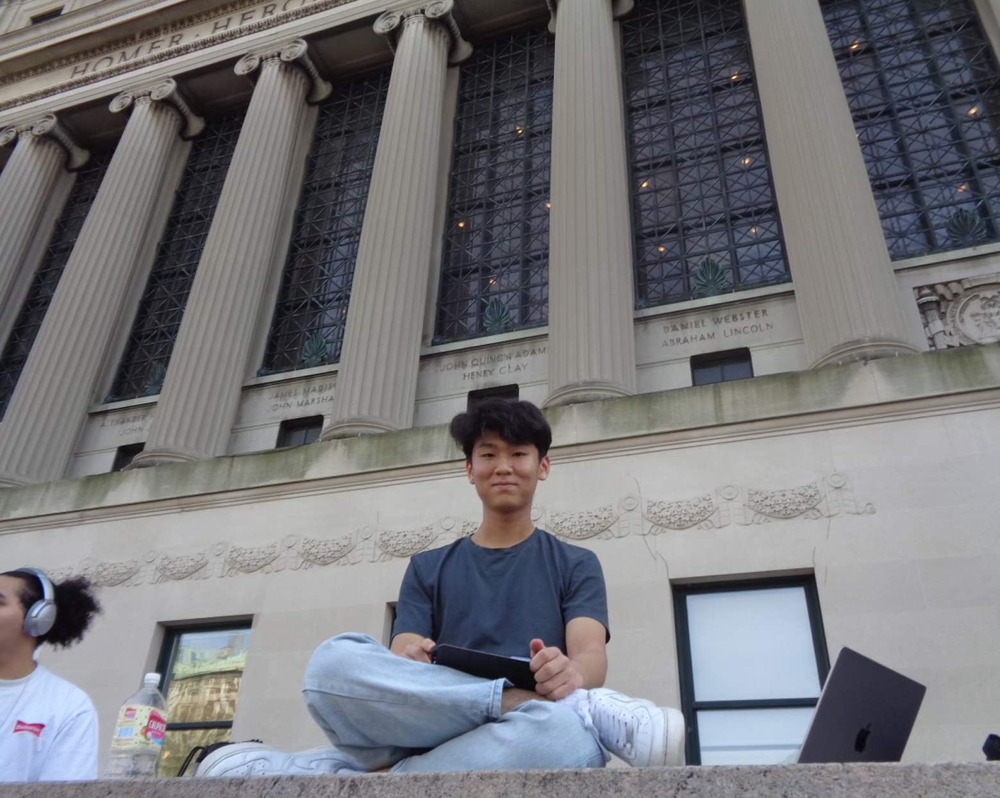

Hey, I’m Joshua!
I’m an aspiring
Product/UX Designer,
studying CS + Music
at Columbia.
I’m an aspiring
Product/UX Designer,
studying CS + Music
at Columbia.

Quick note about me...
After my freshman year, I interned at a private equity firm to explore a career in finance. While I gained valuable skills working on high-stakes projects, I realized I wanted to make a more tangible and immediate impact on people’s everyday lives.
I look forward to a career designing consumer-focused products that make people's days easier and a little brighter.
I am
originally
from
Virginia, Los Angeles, Seoul, Vientiane, Boston, but now living in
NYC.
Projects
DevFest Hackathon 2025
Quillin' is an iOS app for handwritten notes with OCR and LLM-based question-asking.
Quillin' is an iOS app for handwritten notes with OCR and LLM-based question-asking.
Figma
Front-end Development
SwiftUI
FastAPI


Personal case study + Redesign
Canvas Redesign
Canvas Redesign
Figma
Case study
Personal Project
Sunset Mixer is an interactive audio piece where the mountain peaks serve as sliders that adjust the mix.
Sunset Mixer is an interactive audio piece where the mountain peaks serve as sliders that adjust the mix.
p5
JavaScript
Web Audio API


Personal Project
I built this website from scratch using HTML, CSS, and JavaScript to demonstrate my development skills, a foundation for effective communication with engineers.
I built this website from scratch using HTML, CSS, and JavaScript to demonstrate my development skills, a foundation for effective communication with engineers.
HTML
JavaScript
CSS
Résumé
Feel free to reach out!